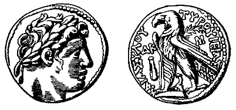

Tyrian Silver Shekel

- Find Name
- Tyrian Silver Shekel
- Description
- A silver shekel of the Phoenician city of Tyre, averaging 14.2 g and at least 94 percent silver. The obverse shows the laureate head of Melqart-Herakles, Tyre's patron god; the reverse shows an eagle standing on a ship's prow with the legend 'of Tyre, the holy and inviolable' (TYROU IERAS KAI ASYLOU). Minted at Tyre from 126/125 BC to 19/18 BC, the type continued, probably minted in or near Jerusalem, until AD 69/70.
- Historical Period
- Hellenistic to Early Roman Period (126 BC-AD 70)
- Evidence Class
- Contextual
- Interpretations
- Despite the pagan god and the graven image, Tyrian shekels and half-shekels were the only coins the temple authorities accepted for the annual half-shekel temple tax (Exodus 30:13; Mishnah Bekhorot 8:7), because of their reliable weight and purity - which is why money-changers worked in the temple courts (Matthew 21:12). The 'thirty pieces of silver' paid to Judas (Matthew 27:3-10) are TRADITIONALLY identified as Tyrian shekels, but the text does not name the coin type, so that identification must be presented as traditional, not proven.
- Alternative Names
- Shekel of Tyre;Tyros Shekel
- Related Places
- Related Books
- Related People
- Scripture Illuminated
- Biblical Significance
- Exodus 30:13 institutes the half-shekel tax and Matthew 17:24-27 shows Jesus and Peter paying the temple tax; the Tyrian shekel was the coin in which that tax was actually paid in Jesus's day, which explains the money-changers' trade in the temple courts.
- Artifact Date
- 126/125 BC-AD 69/70
- Current Location
- British Museum, London and other collections (examples)
- Discovery Location
- Tyre (mint); Jerusalem area (circulation)
- Timeline Era
- Return and Second Temple
Awaiting Review Not yet checked against scholarly sources. Treat its claims as provisional until this entry is reviewed. About verification
Sources: https://www.lifeandland.org/2009/02/the-tyrian-shekel-and-the-temple-of-jerusalem/
https://www.galaxie.com/article/bspade15-4-06
https://www.galaxie.com/article/bspade15-4-06
Last reviewed: not yet reviewed